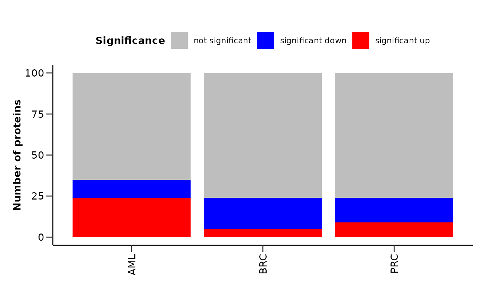
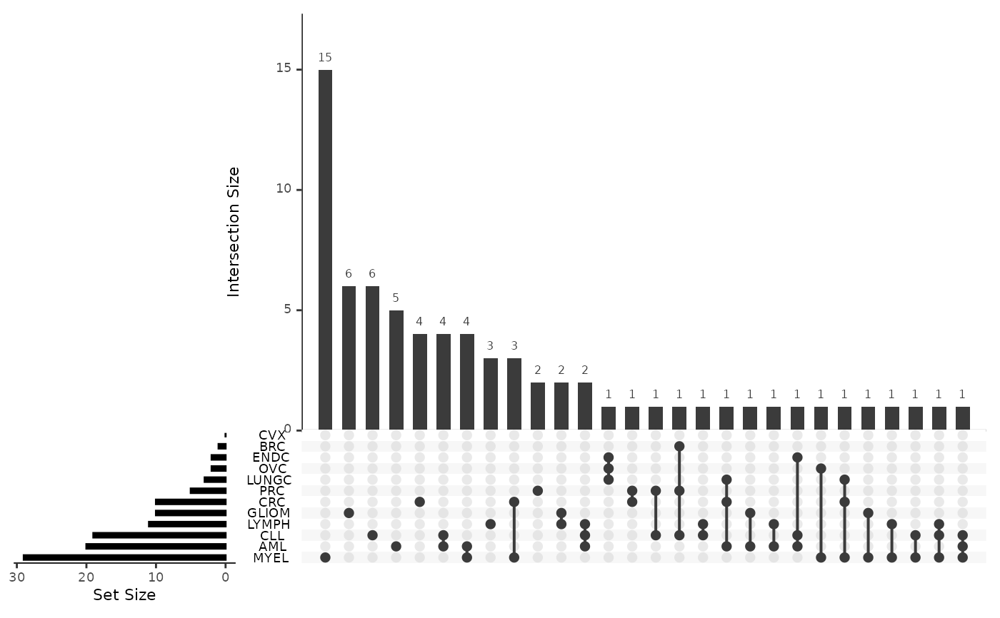
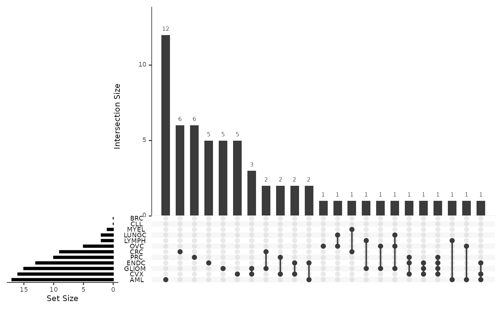

Plot summary visualizations for the differential expression results
Source:R/diff_expression.R
plot_de_summary.Rdplot_de_summary() creates summary visualizations for the differential expression results.
It plots a barplot with the number of significant proteins for each disease.
It also creates upset plots both for the significant up and down regulated proteins for each disease.
Arguments
- de_results
A list with the differential expression results.
- disease_palette
The color palette for the disease. If it is a character, it should be one of the palettes from
get_hpa_palettes(). Default is NULL.- diff_exp_palette
The color palette for the differential expression. If it is a character, it should be one of the palettes from
get_hpa_palettes(). Default is "diff_exp".
Value
A list containing the following plots:
de_barplot: A barplot with the number of significant proteins for each disease.
upset_plot_up: An upset plot with the significant up regulated proteins for each disease.
upset_plot_down: An upset plot with the significant down regulated proteins for each disease.
proteins_list_up: A list with the significant up regulated proteins for each combination of diseases. Created with
UpSetR::fromList().proteins_list_down: A list with the significant down regulated proteins for each combination of diseases. Created with
UpSetR::fromList().
Examples
# Run differential expression analysis for 3 different cases
de_results_aml <- do_limma(example_data,
example_metadata,
case = "AML",
control = c("BRC", "PRC"),
wide = FALSE,
only_female = "BRC",
only_male = "PRC")
#> Comparing AML with BRC, PRC.
de_results_brc <- do_limma(example_data,
example_metadata,
case = "BRC",
control = c("AML", "PRC"),
wide = FALSE,
only_female = "BRC",
only_male = "PRC")
#> Comparing BRC with AML, PRC.
de_results_prc <- do_limma(example_data,
example_metadata,
case = "PRC",
control = c("AML", "BRC"),
wide = FALSE,
only_female = "BRC",
only_male = "PRC")
#> Comparing PRC with AML, BRC.
# Combine the results
res <- list("AML" = de_results_aml,
"BRC" = de_results_brc,
"PRC" = de_results_prc)
# Plot summary visualizations
plot_de_summary(res)
#> $de_barplot

#>
#> $upset_plot_up

#>
#> $upset_plot_down

#>
#> $proteins_list_up
#> $proteins_list_up$AML
#> [1] "ADA" "APEX1" "AZU1" "ANGPT2" "APBB1IP" "ARTN"
#> [7] "ACTA2" "ADGRG1" "AGRP" "AHCY" "B4GALT1" "ARID4B"
#> [13] "ABL1" "ATP6AP2" "ATP6V1F" "AMFR" "ANGPTL4" "ADM"
#> [19] "ACE2" "AREG" "ATF2" "ADA2" "AIF1" "ARHGAP25"
#>
#> $proteins_list_up$`BRC&PRC`
#> [1] "ANGPT1" "ADGRG2" "ADAMTS8"
#>
#> $proteins_list_up$BRC
#> [1] "ANGPT1" "ADGRG2" "AOC1" "ARHGEF12" "ADAMTS8" "ART3" "ADAMTS13"
#>
#> $proteins_list_up$PRC
#> [1] "ATG4A" "APOM" "ANGPT1" "ADAMTS8" "ADGRG2" "AMY2B" "ALDH1A1"
#> [8] "ALPP" "ACAN" "ANXA4"
#>
#>
#> $proteins_list_down
#> $proteins_list_down$AML
#> [1] "ANGPT1" "ADAMTS8" "ADGRG2" "ATG4A" "APOM" "APP"
#> [7] "ADAMTS13" "ARHGEF12" "ALPP" "ACAN" "ANGPTL7" "ANXA11"
#> [13] "AMY2B"
#>
#> $proteins_list_down$`BRC&PRC`
#> [1] "AZU1" "ADA" "APEX1" "APBB1IP" "AHCY" "ACTA2" "ARTN"
#> [8] "ANGPT2" "ARID4B" "AGRP"
#>
#> $proteins_list_down$BRC
#> [1] "AZU1" "ADA" "APEX1" "APBB1IP" "AHCY" "ACTA2"
#> [7] "ARTN" "B4GALT1" "ANGPT2" "ARID4B" "ABL1" "ARHGAP25"
#> [13] "ACE2" "AGRP" "ADA2" "AMFR"
#>
#> $proteins_list_down$PRC
#> [1] "ADGRG1" "ADA" "AZU1" "APEX1" "ATP6AP2" "ANGPT2" "ARTN"
#> [8] "ARID4B" "ADM" "AGRP" "AREG" "AIF1" "ACTA2" "APBB1IP"
#> [15] "AHCY"
#>
#>